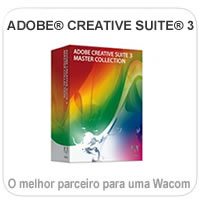

Escolha as dicas pelo software |
|
| Adobe Photoshop | |
Windows Vista |
|
Dicas de utilização |
|
|  |
| Microsoft Windows Vista - Escrever notas á mão | |||||
|
|||||
|
|||||
 |
|||||
| Neste exemplo podemos observar a forma como o Journal pode ser utilizado com a Wacom |